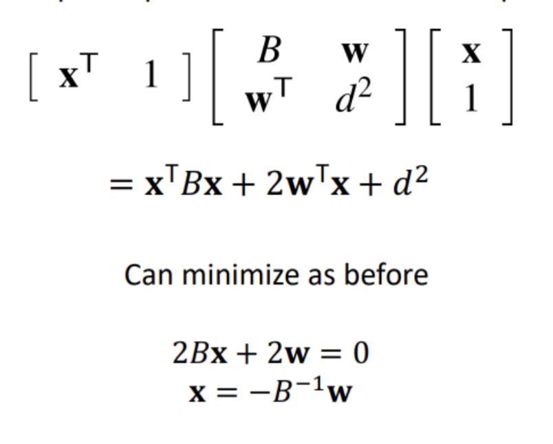

Assignment 1: Surface Mesh Simplication and Subdivision
Introduction
For this assignment, you will be implementing two algorithms covering: 1. Loop Subdivision 2. Quadratic Error Mesh Decimation over any 3D object.
We have made available a visualization tool using the Three.js library implemented in "./js/assignment1.js" and an example implementation located in "./assignments/assignment1.py". Your objective is to create implementations for both "subdivision_loop" and "simplify_quadric_error". You are encouraged to use a programming language with which you are comfortable. The output results should be in the obj format, and you must visualize your outcomes accordingly.
How to Submit: Please submit this template file along with your implementation as a zip file. The zip file should contain your source code, the generated results in OBJ mesh format, and a report that has been modified using this HTML file. The report should comprise your results and a concise explanation of your implementation. Alternatively, you may choose to create a GitHub repository containing all these elements and provide a link for submission.
Grading: The grading is based on the correctness of your implementation. You are encouraged to use the visualization tool to debug your implementation. You can also use the visualization tool to test your implementation on other 3D models. You can find an example of 3D model in the "./assets" folder.
Background
Data Structure
Design Logic
I utilized the same data structure as trimesh, which is a pair of a list of vertices coordinates and a list of corresponding faces.
Implement Details
Implementation details for each algorithm are mentioned in the following.
Loop Subdivision
Algorithm
- Create the odd vertices by obtaining the middle points in each edge
- Update the positions of interior odd vertices (the boundary position is basically the middle points of two vertices, so no need to recompute) using the following equation:
new_vertex = 3/4 * (a + b) + 1/8 * (c + d) (where a and b are the adjacent even vertices and c and d are the remaining vertices)
- Update the positions of even vertices using appropriate update equations as follows
- Interior case: v = vertex * (1-k*BETA) +
(sum of all k neighbor
vertices)*BETA
- Boundary case: v = 3/4 * vertex + 1/8 * (sum of neighboring vertices)
- Remesh the new faces using the updated vertices
Implement Details
I made use of the partial implementation given at this piazza post and added the edge update for the boudary even vertices.
For the boundary cases of even vertices, I used the following logic (source code):
Additionaly, since all the subdivision scheme is for one iteration, I call this loop subdivision function multiple times to get the desired number of iterations.
Results
Iteration: 1, vertices_shape=(26, 3), faces_shape=(48, 3)
Iteration: 3, vertices_shape=(386, 3), faces_shape=(768, 3)
Iteration: 5, vertices.shape=(6146, 3), faces.shape=(12288, 3)
Quadric Error Mesh Decimation
Algorithm
- Compute the plane equation K for all the triangle mesh
- Compute the quadratic errors of each vertex by summing up Ks of neighborig faces
- Compute the costs of each edge and create a heap for the following incremental collapse step
- Iteratively collapse an edge until the number of faces reaches to the target as following
- Find the edge with minimum cost, see if it's a valid edge or not. If it contains already removed vertex, it's invalid.
- Collapse the edge, the faces, and the vertices and update the vertices to a new vertex which minimize the edge cost
- Update the geometry coordinates of faces (vertices) which are adjacent to this edge
- Recalculate the edge costs and update the heap
- Return the resulting mesh
Implement Details
I used the same data structure as the loop subdivision and update the indices and neighboring information upon the remeshing.
When I compute the new vertex to minimize the edge cost, I used the middle point of the edge in the case where the derivitive of the cost function cannot be computed (i.e. the following matrix B is not invertible).

Instead of adding a new vertex upon the edge collapse (e = {v0, v1}), I kept v0 and update the coordinates of v0 to that of the new vertex and update all the connectivities of v1 to v0. This helps all the faces and edges rebuilting the new structure.
These are some details from the source code:
Results
Face count: 10, vertices_shape=(7, 3), faces_shape=(10, 3)
Face count: 8, vertices_shape=(6, 3), faces_shape=(8, 3)
Face count: 4, vertices_shape=(4, 3), faces_shape=(3, 3)
Extra Credits